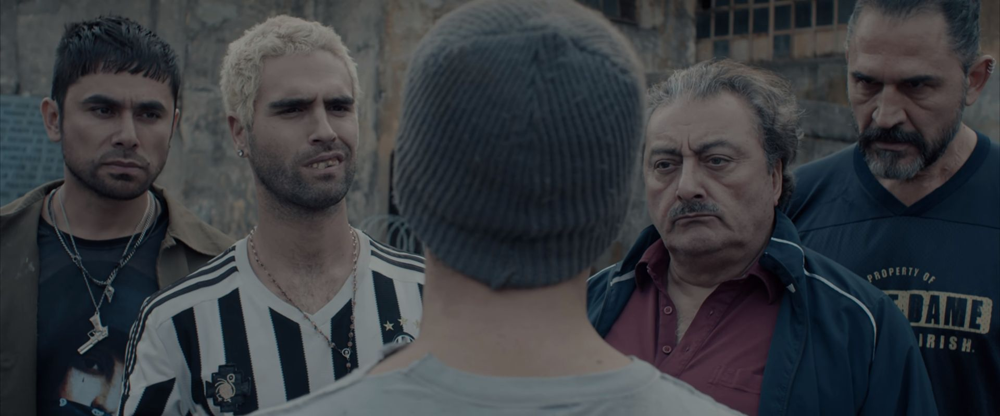

Haciéndose pasar por convicto, el expolicía Miguel Palacios ingresa en la prisión de San Onofre con una identidad falsa: Oslvado Pastor Peña. Su misión es encontrar a la hija adolescente de un poderoso y corrupto juez que, supuestamente, ha sido secuestrada por una banda mafiosa mixta de presos y carceleros de ese centro penitenciario, liderados por Mario Borges y Juan Pablo Diosito Borges. Tras descubrir que la chica se encuentra cautiva en un área de la cárcel y lograr su liberación, Miguel es traicionado y queda tras las rejas como un reo más. Sin testigos que conozcan su verdadera identidad, y rodeado por los peores delincuentes y asesinos, el expolicía pronto comprenderá que solamente escapando puede salvar la vida y recuperar su verdadera identidad.
La segunda temporada transcurre tres años antes de la primera y muestra cómo los hermanos Borges, Diosito y Mario, llegan al penal de San Onofre y se ven envueltos en una guerra de poder contra el Sapo Quiroga. La alianza con Patricio Doc Salgado, un médico anestesista injustamente encarcelado por un crimen que no había cometido, será la clave de la supervivencia.
La tercera temporada se sitúa dos años después del motín de las Palomas y un año antes del secuestro de Luna Lunati. Los hermanos Borges han consolidado su poder en el penal de San Onofre y reciben el encargo del director, Antín, de proteger a un interno recién llegado, Cristian Pardo, hijo de un empresario poderoso. Emma lidia con los traumas que el motín le dejó, y los jóvenes del clan rival de los Borges, la Sub 21, intentan destronar a estos; para ello, atraen a su bando al exboxeador Brunni y a Pantera. Después de la muerte del Sapo, Pantera sería torturado y convertido en una «máquina de pelear» adiestrada para los combates clandestinos que se organizaban en el penal.
La cuarta temporada retoma, con el lapso de unos meses, los acontecimientos que habían cerrado la primera. Los hermanos Borges han sido condenados, junto a James el Colombiano y Barny, a cadena perpetua y son trasladados al complejo penitenciario de máxima seguridad de Puente Viejo. En este nuevo reclusorio, dirigido por un cínico funcionario llamado Benito Galván junto a Coco y su banda, capos de los presos, se encontrarán con un viejo conocido: Miguel Palacios. A esta confrontación se suma la filial local de la Sub 21. Entretanto, el reencuentro entre Pastor y Diosito reaviva en ambos intensos sentimientos del pasado. Desde fuera, Sergio Antín maniobrará para hacerse con el control de la cárcel, y Emma Molinari ayudará a Pastor en un nuevo y peligroso intento de fuga junto a Brian, un joven que, además de ser amigo de Pastor, se ve obligado a trabajar como secretario del alcaide.
Pastor y Diosito, separados luego de una fuga frustrada, se ven enfrentados a nuevos peligros y desafíos para sobrevivir, una desde la propia prisión y el otro buscándose la vida fuera de los muros; ambos tendrán que afrontar las consecuencias de sus actos y reparar los daños del pasado. Por su parte, un enfermo y envejecido Mario Borges comienza a perder su poder e influencia, algo que intentará ser aprovechado tanto por el grupo de Bardo como por la Sub 21 de César.